222102_LeftWall
SW1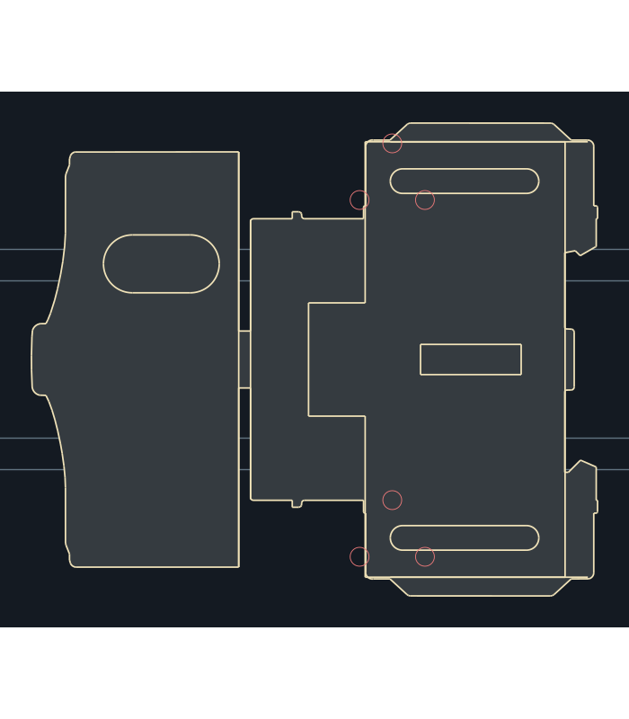
Handle, base, shaft connection, switch housing, terminal banks and latch; the two existing dashed wall datums remain on User.Drawings.
2,572 source objects → 167 outline primitives; 1 fill polygon(s).F.Silkscreen contours · F.Adhesive body fill · complete source detail on F.Fab. All 12 remaining device types are installed in the shared library and 55 board instances. The approved fuse-holder pilot is unchanged. Preview colors are muted for review; KiCad uses your layer theme.

Handle, base, shaft connection, switch housing, terminal banks and latch; the two existing dashed wall datums remain on User.Drawings.
2,572 source objects → 167 outline primitives; 1 fill polygon(s).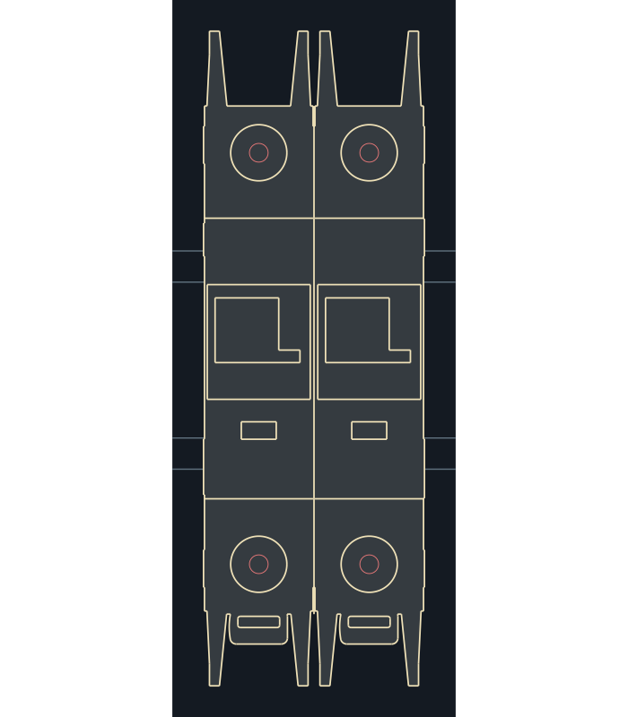
Both poles, four plain terminals, both toggle assemblies, indicators and mounting feet; molding ribs and screw slots omitted.
1,578 source objects → 151 outline primitives; 1 fill polygon(s).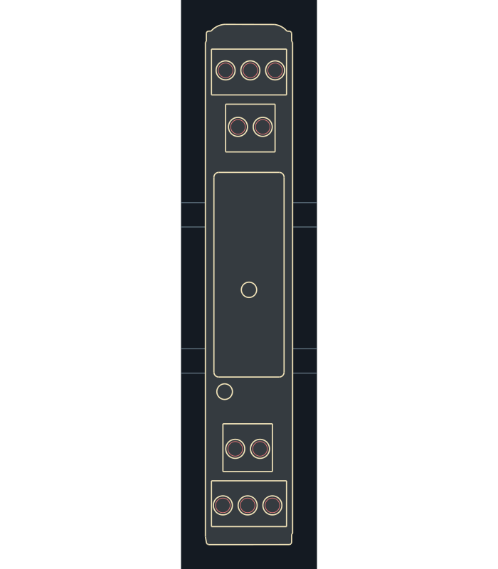
Relay cover, four terminal banks, ten plain screw heads and two functional circular features; concentric decorative rings omitted.
2,434 source objects → 58 outline primitives; 1 fill polygon(s).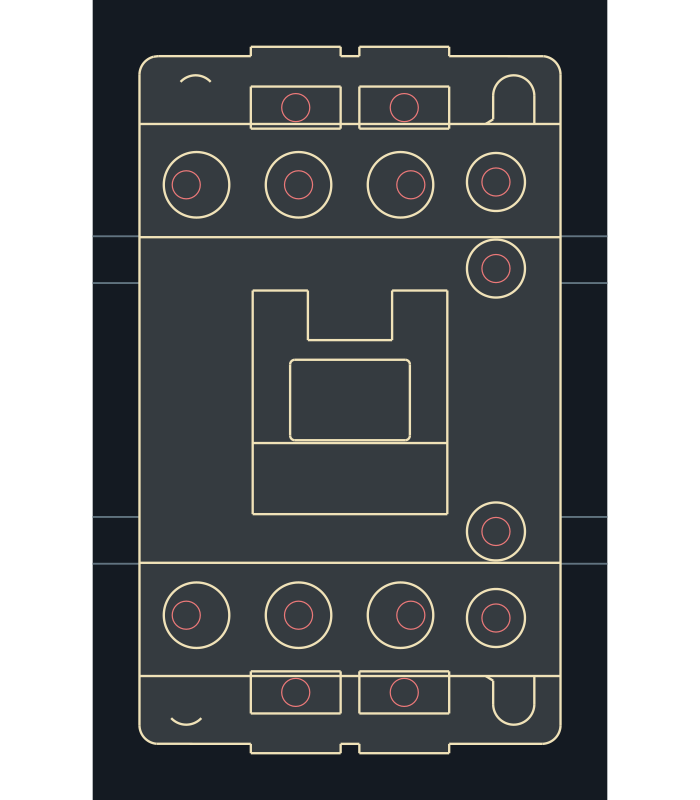
Plain source-position screw heads, coil terminal banks, mounting ears and central actuator; fourteen wiring targets retained without relocation.
550 source objects → 82 outline primitives; 1 fill polygon(s).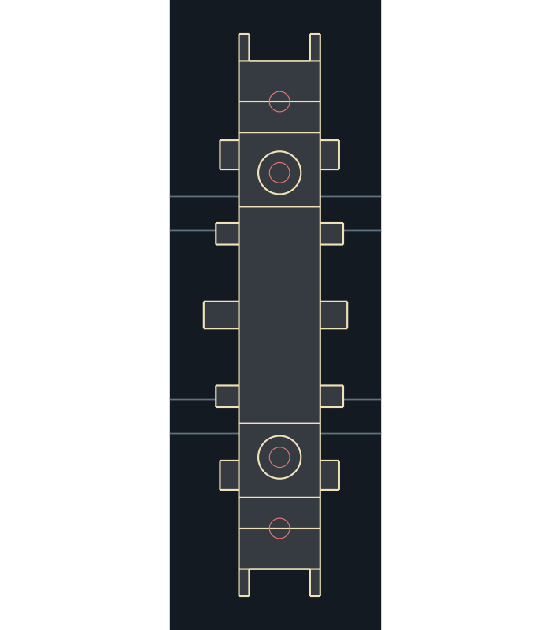
Body, actuator tabs and two visible screw heads; all four electrical targets retained including two obscured screws.
848 source objects → 72 outline primitives; 1 fill polygon(s).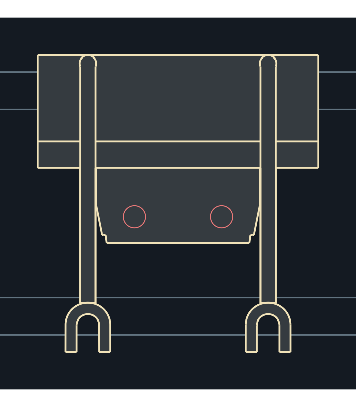
Body, spring clip, two flexible leads and both open forks; gaps between leads remain unfilled.
366 source objects → 54 outline primitives; 3 fill polygon(s).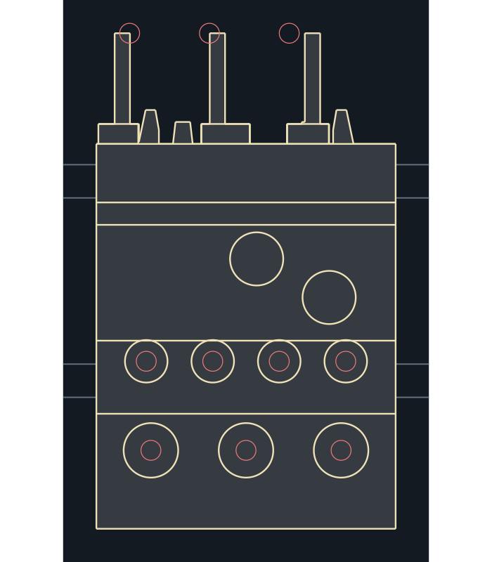
Three original blade shapes, seven screws, two controls and major housing sections; source blade/wiring-target offset retained.
377 source objects → 68 outline primitives; 1 fill polygon(s).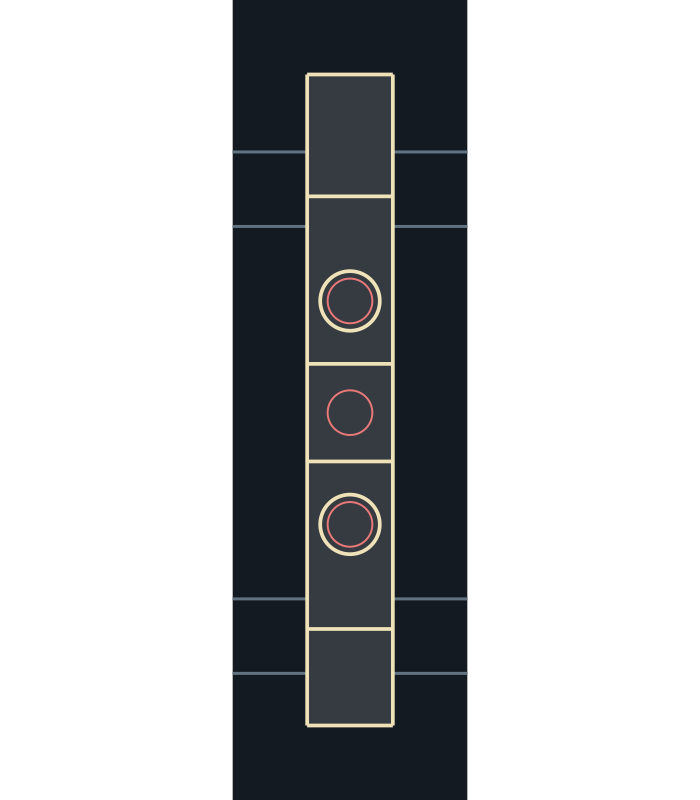
Two screw heads and central PE contact region; original PE wiring target and courtyard preserved.
513 source objects → 10 outline primitives; 1 fill polygon(s).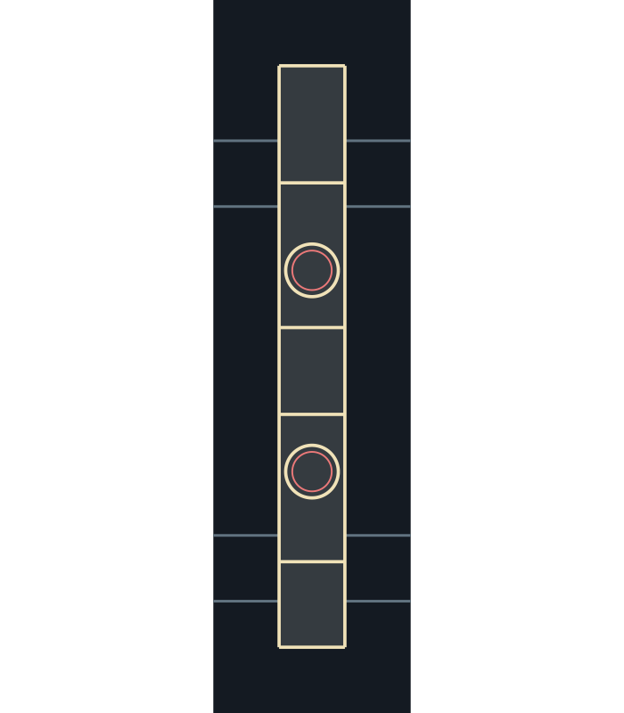
Terminal body, two plain screw heads, terminal sections and central jumper channel; molded ribs omitted.
114 source objects → 10 outline primitives; 1 fill polygon(s).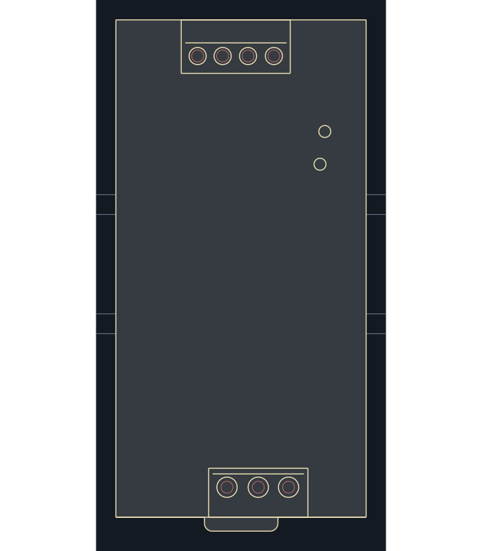
63 x 125.2 mm case plus source DIN-release clip; seven terminals, adjuster and indicator.
659 source objects → 30 outline primitives; 1 fill polygon(s).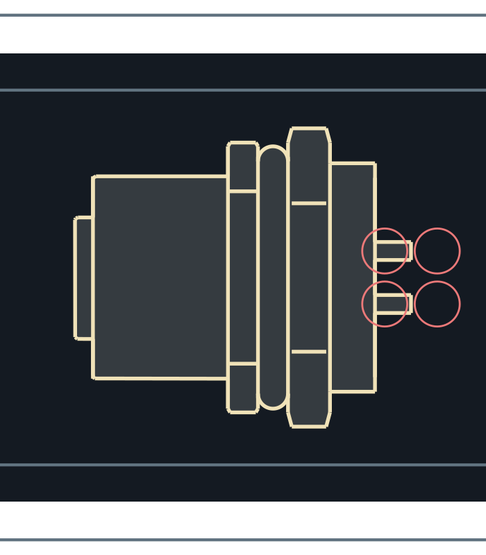
Connector body, two hex sections, seal, plain threaded-collar envelope and rear stubs; thread and bevel detail omitted.
1,183 source objects → 57 outline primitives; 1 fill polygon(s).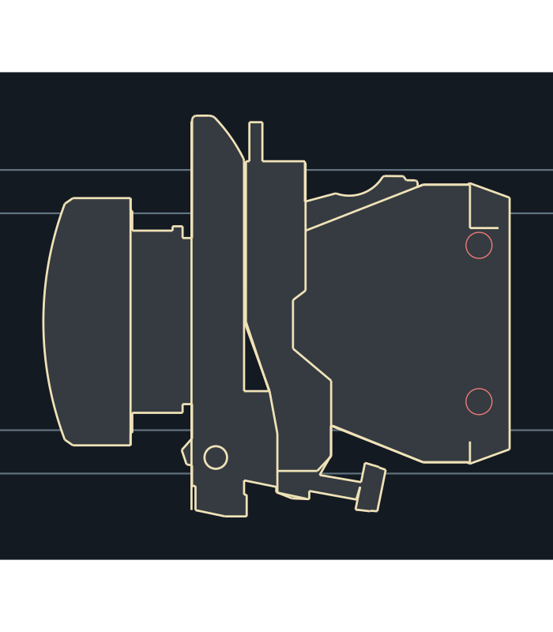
Lens and bezel, mounting collar/bracket, rear light block, two terminal regions and retaining fastener; lens seam closed without changing its envelope.
1,146 source objects → 112 outline primitives; 1 fill polygon(s).Red circles mark preserved electrical wiring targets. Gray lines are review rails, shown to check body occlusion. These drawings are nominal layout guides.